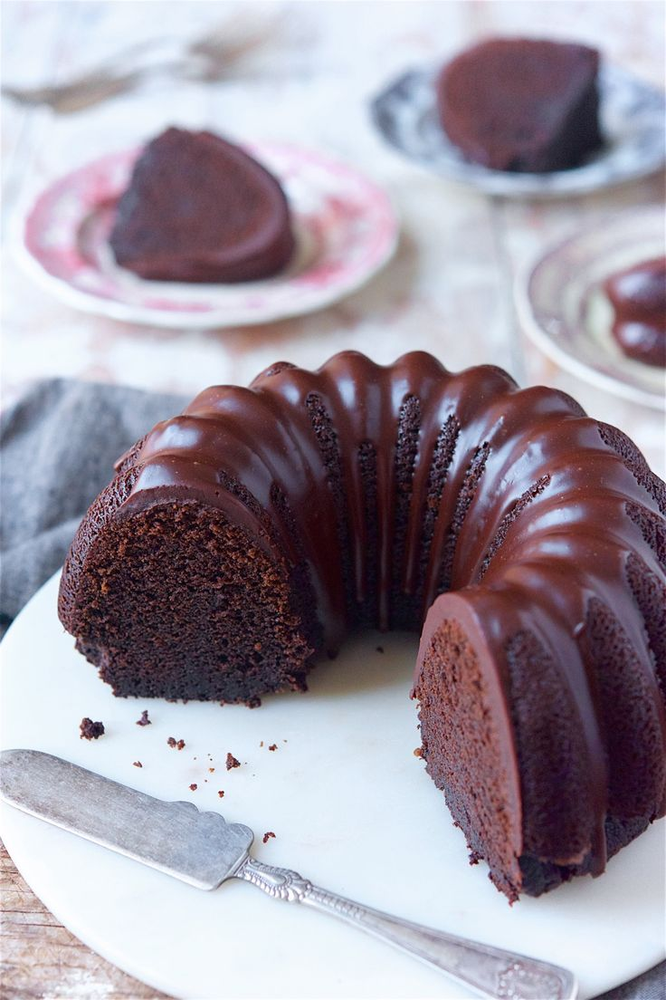
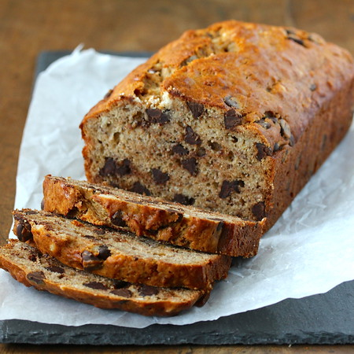
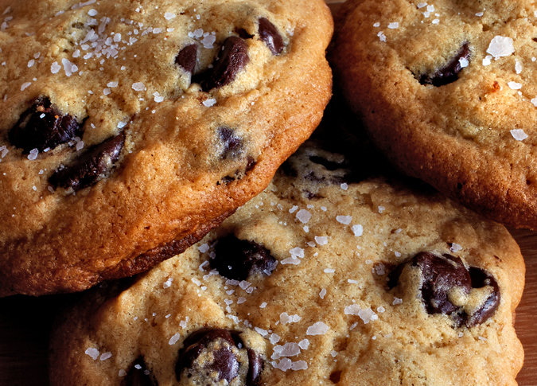

5 sliced apples (crisp and tart apples like Granny Smith work best)
5 Tbsp + 2 cups sugar
5 tsp cinnamon
3 cups flour
3 tsp baking powder
1 tsp salt
1/2 cup vegetable oil
1/2 cup apple sauce
4 eggs
1/4 cup orange juice
1 Tbsp vanilla
Directions
Combine apples with 5 Tbsp sugar and cinnamon. Set aside
Sift flour, add remaining sugar, baking powder, and salt into bowl.
Make a well in the center and add oil, apple sauce, eggs, O, and vanilla. Beat with a wooden spoon.
Poor 1/3 of batter into a greased bundt pan. Make a ring of apple mixure. Add next 1/3 of batter. Add remaining apple mixture in ring. End with remaining batter.
Bake at 350 for 1 hour
Hershey's Chocolate Syrup Cake

Ingredients
1/2 cup butter
1 cup sugar
4 eggs
1 cup flour
1 tsp baking powder
1 can Hershey syrup (16oz)
1 tsp vanilla
Directions
Cream together butter, sugar, and eggs
Add and beat in flour, baking powder, Hershey syrup, and vanilla
Pour into 9" tube pan
Bake 350 for 45 min
Chocolate Chip Banana Bread

Ingredients
1 cup granulated sugar
8 tablespoons (1 stick) unsalted butter, room temperature
2 large eggs
3 ripe bananas
1 tablespoon milk
1 teaspoon ground cinnamon
2 cups all-purpose flour
1 teaspoon baking powder
1 teaspoon baking soda
1 teaspoon salt
1 cup Chocolate Chips
Directions
Preheat the oven to 325 degrees F. Butter a 9 x 5 x 3 inch loaf pan.
Cream the sugar and butter in a large mixing bowl until light and fluffy. Add the eggs one at a time, beating well after each addition.
In a small bowl, mash the bananas with a fork. Mix in the milk and cinnamon. In another bowl, mix together the flour, baking powder, baking soda and salt.
Add the banana mixture to the creamed mixture and stir until combined. Add dry ingredients, mixing just until flour disappears.
Pour batter into prepared pan and bake 1 hour to 1 hour 10 minutes, until a toothpick inserted in the center comes out clean. Set aside to cool on a rack for 15 minutes. Remove bread from pan, invert onto rack and cool completely before slicing.
Salted Tahini Chocolate Chip Cookies

Ingredients
4 ounces/113 grams unsalted butter at room temperature
1/2 cup/120 milliliters tahini, well stirred
1 cup/200 grams granulated sugar
1 large egg
1 egg yolk
1 teaspoon vanilla extract
1 cup plus 2 tablespoons/150 grams all-purpose flour, or matzo cake meal
1/2 teaspoon baking soda
1/2 teaspoon baking powder
1 teaspoon kosher salt
1 3/4 cups/230 grams chocolate chips or chunks, bittersweet or semisweet
Flaky salt, like fleur de sel or Maldon
Directions
In the bowl of an electric mixer fitted with the paddle attachment, cream butter, tahini and sugar at medium speed until light and fluffy, about 5 minutes. Add egg, egg yolk and vanilla and continue mixing at medium speed for another 5 minutes.
Sift flour, baking soda, baking powder and kosher salt into a large bowl and mix with a fork. Add flour mixture to butter mixture at low speed until just combined. Use a rubber spatula to fold in chocolate chips. Dough will be soft, not stiff. Refrigerate at least 12 hours; this ensures tender cookies.
When ready to bake, heat oven to 325 degrees and line a baking sheet with parchment paper or nonstick baking mat. Use a large ice cream scoop or spoon to form dough into 12 to 18 balls.
Place the cookies on the baking sheet at least 3 inches apart to allow them to spread. Bake 13 to 16 minutes until just golden brown around the edges but still pale in the middle to make thick, soft cookies. As cookies come out of the oven, sprinkle sparsely with salt. Let cool at least 20 minutes on a rack.